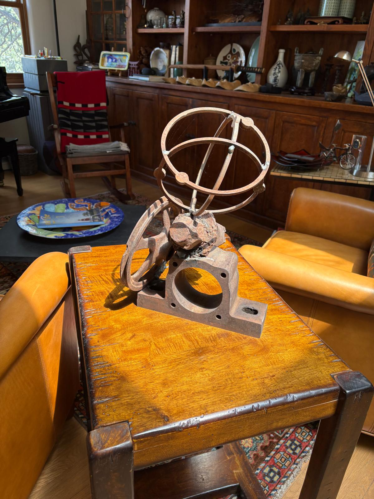
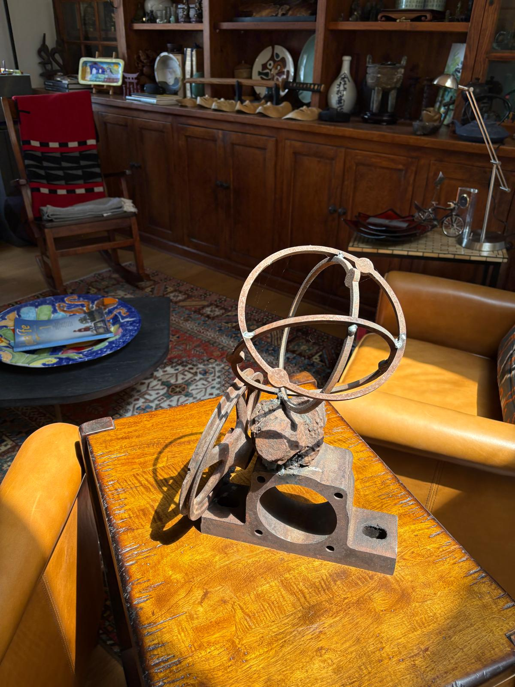

Welded steel sculpture · Barry Rutherford
Orbital Study
For information about this work, contact Barry Rutherford.


Welded steel sculpture · Barry Rutherford
For information about this work, contact Barry Rutherford.
